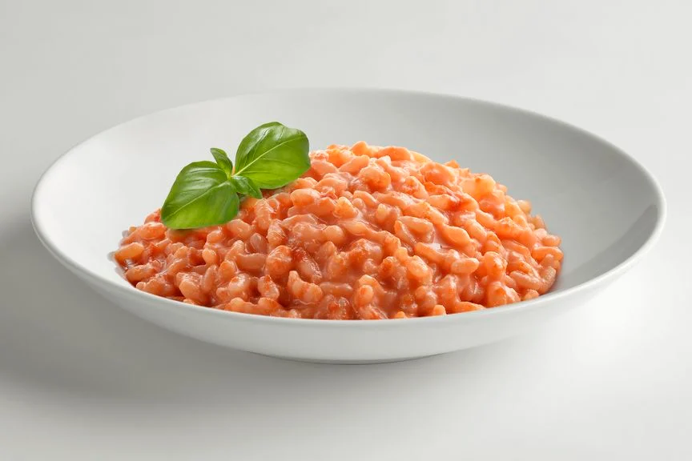

Tomaten Risotto
Für Personen in ~20min fertig

1
kleine Zwiebel oder ½ Knoblauchzehe
150
g
Kirschtomaten
Olivenöl
200
g
Risotto Reis
200
g
½ Dose (à 400 g) stückige Tomaten
500
ml
Gemüsebrühe
100
g
Parmesan
1
Esslöffel
Butter
Salz und Pfeffer
Knoblauch oder Zwiebeln in Öl andünsten
Risotto Reis hinzufügen
Brühe nach und nach hinzufügen und köcheln bist die gewünschte Konsistenz erreicht ist (leicht Bissfest)
Butter und Käse unterrühren